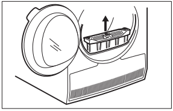

9. ПРЕПОРЪКИ И СЪВЕТИ
9.1 Екологични съвети
-
Центрофугирате добре прането
преди сушене.
-
Не надвишавайте допустимите
количества пране, посочени в глава
„Програми“.
-
Почиствайте филтъра след всеки
цикъл на сушене.
-
Не използвайте омекотител за
тъкани за пране, което след това
ще сушите. В барабанната сушилня
прането автоматично омеква.
-
За промяна на степента на сушене по
подразбиране:
1. Включете уреда.
2. Изберете 1 от наличните
програми.
3. Докоснете и задръжте бутоните
Cуха плюс и Дълга против
намачкване по едно и също
време.
На дисплея се извежда един от
символите:
– максимално сушене
– допълнително сушене
– стандартно сушене
4. Докоснете бутона Старт /
Пауза няколко пъти, докато
достигнете желаната степен на
сушене.
5. За да запаметите настройката,
докоснете и задръжте бутоните
-
Индикаторът на контейнера за вода е
активиран по подразбиране. Започва
да свети към края или по време на
цикъла на сушене, ако резервоара за
вода е пълен. Ако е монтиран
комплектът за източване, контейнерът
за вода се източва автоматично и
индикаторът може да бъде
деактивиран.
За да деактивирате индикатора:
1. Включете уреда.
2. Изберете 1 от наличните
програми.
3. Докоснете и задръжте бутоните
Дълга против намачкване и
Време по едно и също време.
Възможна е една от следните 2
конфигурации:
• индикаторът Водосъдържател:
светва, ако се появи
символът –
индикаторът на контейнера за
вода е активиран за постоянно
• индикаторът Водосъдържател:
изгасва, ако се появи
символът –
индикаторът на контейнера за
вода е деактивиран за
постоянно
breakroll
breakroll
breakroll
breakroll
breakroll
breakroll
breakroll
breakroll
breakroll
breakroll
breakroll
breakroll
breakroll
breakroll
breakroll
breakroll
breakroll
breakroll
breakroll
breakroll
breakroll
breakroll
breakroll
breakroll
10. ГРИЖИ И ПОЧИСТВАНЕ
10.1 Почистване на
филтъра
-
В края на всеки цикъл символът
Филтр се показва на дисплея и Вие
трябва да почистите филтъра.
Филтърът събира пуха по
време на цикъла на
сушене.
1. Отворете вратата. Издърпайте
филтъра.
2. Натиснете куката, за да отворите
филтъра.
3. Почистете двете части на
филтърът с мокра ръка.
4. Ако е необходимо, почистете
филтъра с прахосмукачка.
Затворете филтъра.
5. Ако е необходимо почистете
топчетата от гнездото на филтъра
и уплътнителя. Може да
използвате прахосмукачка.
Поставете филтъра в гнездото за
филтъра.
ВНИМАНИЕ!
Не докосвайте металната
повърхност с голи ръце.
Риск от нараняване.
Носете предпазни
ръкавици. Почиствайте
внимателно, за да
предотвратите
наранявания по металната
повърхност.
За проверка:
1. Отворете вратата. Издърпайте
филтъра.

2. Отворете капака на кондензатора.
3. Завъртете лоста, за да
деблокирате капака на
кондензатора.

10.5 Почистване на
командното табло и
корпуса
Използвайте стандартен неутрален
почистващ препарат за почистване на
командното табло и корпуса.
Използвайте влажна кърпа за
почистването. Подсушете почистените
повърхности с мека кърпа.
breakroll
breakroll
breakroll
breakroll
breakroll
breakroll
breakroll
breakroll
breakroll
breakroll
breakroll
breakroll
11. ОТСТРАНЯВАНЕ НА НЕИЗПРАВНОСТИ
1) Ако на дисплея има съобщение за грешка (напр. E51): Изключете и включете барабанната су‐
шилня. Изберете нова програма. Натиснете бутона Старт/Пауза. Ако уредът не работи, свържете
се с центъра за обслужване и продиктувайте кода за грешка.
2) Съобразете се с описанието на програмите — вижте глава ПРОГРАМИ
3) Вижте глава ГРИЖИ И ПОЧИСТВАНЕ.
4) Само сушилни с опцията Cуха плюс.
5) Вижте глава СЪВЕТИ.
6) Забележка: След максимум 5 часа цикълът на сушене завършва автоматично.
12. ТЕХНИЧЕСКИ ДАННИ
1) Съгласно EN 61121. 9кг памучни тъкани, центрофугирани при 1000 об./мин
2) Съгласно EN 61121. 4,5кг памучни тъкани, центрофугирани при 1000 об./мин.
3) Консумация на енергия за година в КВч на базата на 160 цикъла на сушене при стандартна про‐
грама за памук при пълно и частично зареждане и консумация при режими, използващи по-малко
енергия. Действителната консумация на енергия на цикъл ще зависи от това как се използва уре‐
да (НАРЕДБА (ЕС) No 392/2012).
13. ПРИНАДЛЕЖНОСТИ
-
13.1 Набор за надстройване
Име на аксесоара: SKP11, STA9
Налично от вашия оторизиран
търговец.
Комплектът за надстройване може да
се използва само с пералните машини
и барабанните сушилни, посочени в
листовката. Вижте приложената
листовка.
Внимателно прочетете приложените
към аксесоара инструкции.
13.2 Комплект за източване
Име на аксесоара: DK11.
Налични при Вашия оторизиран
търговец (може да са прикрепени към
някои видове барабанни сушилни)
breakroll
breakroll
breakroll
breakroll
14. ОПАЗВАНЕ НА ОКОЛНАТА СРЕДА
-
Рециклирайте материалите със
символа . Поставяйте опаковките в
съответните контейнери за
рециклирането им. Помогнете за
опазването на околната среда и
човешкото здраве, както и за
рециклирането на отпадъци от
breakroll
breakroll
breakroll
breakroll